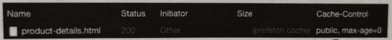

API技巧
NaN/NaN/NaN · YinHao分析问题的原因
减少干扰
当请求出现非预期的运行方式，或者想要重现用户遇到的问题时，首先要去除开发环境和浏览器的干扰，才能有效缩小问题的范围，最简单的方式是启动无痕模式。另一种常用的方式为清除浏览器缓存并重新刷新页面。
步骤如下：

- 清除网站数据
在浏览网站的过程中，可能会存储 Cookie、缓存等，它们都可能影响后续网站浏览和请求的运行方式，使用
Clear site data可以清除该网站所有的数据，

如上，可以同时清除 LocalStorage 和 Cookie。
- 网站之外的因素
除了网站本身外，请求的运行方式还可能受到以下因素影响：
-
存储在服务器、CDN 的缓存：需要了解服务器端的设置，或通过 CDN 提供的 API 来清除非预期的缓存。
-
设备连接状态：DNS 查询和建立连接的过程也占了请求时间的一环，浏览器会使用 DNS 解析缓存等机制来加速连接流程。
-
HSTS: 使用 HSTS 机制的网站会将所有 HTTP 请求自动转为 HTTPS。
清除 Chrome 现有的连接和 DNS 解析缓存的步骤如下：
(1) 在网址输入：chrome://net-internals/#sockets
(2) 单击 Flush socket pools 来关闭现有的连接
(3) 从左侧列表切换到 DNS，单击 Clear host cache 来清除 DNS 解析缓存。
清除 HSTS 机制步骤如下：
(1) 在网址输入：chrome://net-internals/#hsts
(2) 在最下方的 Delete domain security policies 中输入网站的 Domain
(3) 单击 Delete 按钮
模拟限制
打开 Newwork conditions 分页，


- 压缩限制
压缩网站资源可以大幅度提升加载速度，而调整 Network conditions 分页中的 Accepted Content-Encodings 则可以模拟无法使用特定压缩格式的情况。
- 阻挡资源
通过 Network request blocking 分页可以模拟无法获取特定资源的情况，便于测试备用资源


在 Network request blocking 分页中加入 .svg 后匹配到的请求都被阻挡了。
画面截图
无论何种方式模拟用户使用场景，肉眼所见的网页加载过程才是影响用户体验的关键，在设置中勾选 Capture screen shots 选项后，加载过程中每一帧画面的变动都会被截取下来，此可以观察显示上的问题，例如 CSS、字体、图片等造成的版面跳动或是确认重要内容优先显示，进而调整资源的阅读顺序或依赖关系


请求过慢
优化请求时间值之前，需要先找出造成问题的主要原因，一般来说，会从 Network 面板中的 Timing 分页着手观察各个阶段所花费的时间，另外，时间也可能受到优先级或依赖关系的影响。
- Timing 分页
在发起请求时，首先要经过 DNS lookup、TCP handshake、SSL negotiation 等阶段才建立连接并开始下载内容，Timing 分页会显示各个阶段所花费的时间

根据花费时间较久的阶段不同，有不同的解决方式，例如：
-
Queuing、Stalled：以 HTTP2 或 Domain sharding 解决浏览器连接上限，提高资源优先级。 -
DNS Lookup：进行 DNS Prefetch -
Initial connection：进行 Preconnect -
Waiting(TTFB)：可以在本地端测试来判断问题在连接过程还是服务器本身，前者可以用 CDN 减少连接时间，后者则需要优化数据库存取，仅用缓存等方式解决。 -
Content Download：尽可能减少资源大小，通常使用 CDN 可以提升下载速度。
- Initiator 分页
若问题的主要原因是太慢发起请求，可以通过 Initiator 分页检查请求的依赖关系和发起原因，尽可能延后加载，渲染初始网页时非必要的资源，并减少必要资源的依赖关系。
如上，Request initiator chain 以层级呈现请求依赖关系，自上而下按序触发。
缓存问题
请求记录列表
一个请求该如何进行缓存是由浏览器和响应标头决定的，查看缓存问题时，会专注几个特定字段：Name、Status、Size、Cache-Control、Etag、Last-Modified，当 Status 是 304 或 Size 是 memory cache、disk cache 时，代表成功使用了缓存。
值得注意的是，有些请求的 Status、Size 颜色较淡，表示该请求并没有实际送出，而是直接使用了浏览器中存储的缓存，在请求标头中只会显示一些默认值和提示信息，

Prefetch 和 Preload
除了使用 Cache-Control 外，prefetch 和 Preload 也是常用的缓存技巧，
- prefetch
<link rel="prefetch" href="style.css" as="style" />
通常用于提前读取下一次跳转会用到的资源，它的优先级非常低，当浏览器不是立即需要下载的资源并进入闲置状态时，才会开始执行 prefetch，另外，无论该请求的缓存机制是什么，以 prefetch 下载的资源都会保留 5 分钟。

来自 prefetch 缓存的资源会在请求列表的 Size 字段显示出 prefetch cache。
- preload
<link rel="preload" href="style.css" as="style" />
当前页面马上会使用到的资源可以用 preload 来告诉浏览器需要马上加载，例如影响阅读的字体、图片或是经过 Code splitting 的程序代码，其拥有最高的优先级，在 Chrome 中只要 preload 资源 5 秒内没有使用到，就会发出警告。

未使用的 preload 资源会在 Console 内显示警告。
- CORS 模式
<link rel="preload" href="font.woff2" as="font" type="font/woff2" crossorigin />
preload 资源时，需要注意 CORS 模式，如果 preload 使用的模式和后续请求不用，则无法使用该资源。以字体资源为例，根据规范加载字体资源时，必须使用 Anonymous 模式，因此 preload 时需要加上 crossorigin 属性来启用 Anonymous 模式，否则即使下载了资源，还是无法使用缓存，最终造成发出两次请求。
基本缓存机制
经常变动的文件或网页的进入点通常不会使用缓存，可以在响应标头中放入 Cache-Control: no-store 来确保每次请求都会得到最新的资源，但是图片、JavaScript、CSS 文件等资源通常会利用缓存来提升网站体验，
一般而言，会使用以下两种方式来进行缓存：
(1) 使用 Hash 或版本号
以 Hash 或版本号作为获取文件的方式，如 index.d4d64.js、index.js?v=1423cda3 可以确保用户拿到正确的文件，搭配较长的缓存保留时间设置，如 Cache Control: max-age = 31536000，浏览器建立缓存后，相同我呢间都不需要再次发送请求。
(2) 利用服务器端验证
利用 Cache-Control: max-age=0, must-revalidate 搭配 Etag 和 Last-Modified 标头，在发送请求后，由服务器端决定是否使用缓存，这种方式的好处是服务器掌握了缓存的控制权，不过仍需实际发出请求，若连接速度慢，则需要另寻方式解决。
no-cache
Cache-Control: no-cache 时常被误解为不建立缓存，然后实际的运行和 Cache-Control: max-age=0, must-revalidate 完全相同，表示浏览器建立缓存后，仍需向服务器端确认是否可以使用。若不希望浏览器建立缓存，正确的标头应为 Cache-Control: no-store。
修改请求和响应
复制请求
在 Network 面板中可以复制请求的程序代码，

编辑、重发请求
在 Debug 时，通常需要重复测试才能解决问题，除了通过 Chrome DevTools 的 Network 面板来查看各个请求的信息或在网页中直接触发请求外，针对有问题的 API 编辑请求、重发请求可以更快找出问题，常见的工具如下：
- 在 Firefox 的 Network 面板右击请求，并选择
Edit and Resend，可以编辑、重发请求，在测试缓存、Cookies 时非常方便


- 利用 Postman 记录请求信息后，可以在应用程序中编辑、重发并查看结果，
拦截请求
可以找一些浏览器插件来实现目标。